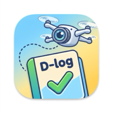

1
周辺インフラのリスクチェック
入力された座標（半径300m）周辺の送電線・鉄塔をOpenStreetMap（OSM API / Overpass API）から自動検知し、衝突リスクを事前評価します。
半径300m
送電線・鉄塔
OSM API

かんたん・安全なドローン飛行日誌 ＆ リスクアセスメント
Today
—
今月の飛行
0 件 / 0 h
—
現在の入力内容（未入力の場合は一覧の最新記録）を、国交省様式1のExcelテンプレートへ書き出します。
重要: DIPS 2.0 には飛行日誌の CSV インポート機能がありません。出力する CSV は 国交省「無人航空機の飛行日誌の取扱要領」様式1〜3の記載事項に準拠した記録・保管用データです。 DIPS への登録は画面からの入力が必要です。
該当する飛行記録がありません
条件を変えるか、新しい飛行を記録してください。
総飛行時間
0 h
総飛行回数
0 回
点検アラート
0 台
安全影響事象
0 件
20時間（1200分）を基準に点検時期を表示
20時間定期点検・修理を記録
D-logは、現場での操作性に特化した安全・セキュアなドローン飛行日誌アプリです。
飛行記録・日常点検・機体管理を1画面にまとめ、現場で迷わない操作と、大切な記録を外部に預けすぎない設計を両立しています。
Main features
入力された座標（半径300m）周辺の送電線・鉄塔をOpenStreetMap（OSM API / Overpass API）から自動検知し、衝突リスクを事前評価します。
現場で読み込んだフライトデータを解析し、国土交通省指定フォーマット（Excel形式）の飛行日誌を自動生成・ダウンロードできます。
飛行記録はご使用の端末（スマホ）内にのみ保存されます。重たいExcel生成やリスク計算処理だけをセキュアな専用サーバー（BFF）で行うため、大切なフライトデータが外部のWebサービスに漏れることはありません。
端末内に保存
日誌・機体・操縦者・点検記録は、この端末のブラウザ内（localStorage）に保存します。
BFFで処理
DJIログ解析・Excel生成・周辺インフラ判定だけを、専用のBFFで処理します。
Quick start
飛行を記録
日付・場所・機体を選び、飛行時間と点検結果を入力します。
日誌を出力
日誌タブで記録を検索し、CSVまたはExcelで出力します。
機体を管理
機体管理タブで点検時期や整備履歴を確認します。
BFFの接続先変更や、技能証明（資格区分・有効期限・限定解除）の登録は「設定」タブから行えます。
大切な記録のバックアップ
記録は端末のブラウザ内に保存されるため、ブラウザのデータ削除や端末の変更の前に、日誌タブからCSV / Excelを出力して保管してください。
BFF 接続のヒント（Chrome）
初回接続時に「ローカル ネットワークへのアクセス」を求められた場合は「許可」を選んでください。許可しないと、CORS の設定が正しくても接続テストが失敗します。Safari やローカルプレビュー（python3 -m http.server）では不要です。
この端末の BFF 接続先、操縦者の技能証明、データのバックアップを管理します。
BFF connection
末尾の / は自動で除去します。/api は含めないでください。
HTTPS のページから http:// の BFF は、ブラウザの混在コンテンツ制限で遮断されます。本番は https://…ts.net を指定してください。
Chrome で初回接続時に「ローカル ネットワークへのアクセス」を求められた場合は「許可」を選んでください。許可しないと接続テストが失敗します（Safari やローカルプレビューでは不要です）。
現在の接続先:
Pilot license
Backup & restore
この端末の drone-log: データ（飛行記録・機体・操縦者・点検・設定）を、BFF の data/backup.json に保存します。
バックアップには個人情報とBFF接続先が含まれます。復元すると接続先も保存時の値に戻ります。BFFの data/backup.json は端末外（Tailscale内のサーバー）に保存されるため、取扱に注意してください。